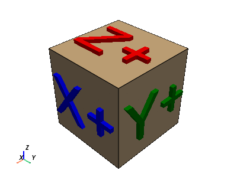

pyvista.Camera#
- class Camera(renderer=None)[source]#
PyVista wrapper for the VTK Camera class.
- Parameters:
- renderer
pyvista.Renderer,optional Renderer to attach the camera to.
- renderer
Examples
Create a camera at the pyvista module level.
>>> import pyvista >>> camera = pyvista.Camera()
Access the active camera of a plotter and get the position of the camera.
>>> pl = pyvista.Plotter() >>> pl.camera.position (1.0, 1.0, 1.0)

- property azimuth#
Azimuth of the camera.
Rotate the camera about the view up vector centered at the focal point. Note that the view up vector is whatever was set via SetViewUp, and is not necessarily perpendicular to the direction of projection.
Examples
>>> import pyvista >>> pl = pyvista.Plotter() >>> pl.camera.azimuth 0.0 >>> pl.camera.azimuth = 45.0 >>> pl.camera.azimuth 45.0

- property clipping_range#
Return or set the location of the clipping planes.
Clipping planes are the the near and far clipping planes along the direction of projection.
Examples
>>> import pyvista >>> pl = pyvista.Plotter() >>> pl.camera.clipping_range (0.01, 1000.01) >>> pl.camera.clipping_range = (1, 10) >>> pl.camera.clipping_range (1.0, 10.0)
- copy()[source]#
Return a deep copy of the camera.
- Returns:
pyvista.CameraDeep copy of the camera.
Examples
Create a camera and check that it shares a transformation matrix with its shallow copy.
>>> import pyvista as pv >>> import numpy as np >>> camera = pv.Camera() >>> camera.model_transform_matrix = np.array([[1., 0., 0., 0.], ... [0., 1., 0., 0.], ... [0., 0., 1., 0.], ... [0., 0., 0., 1.]]) >>> copied_camera = camera.copy() >>> copied_camera == camera True >>> camera.model_transform_matrix = np.array([[1., 0., 0., 0.], ... [0., 1., 0., 0.], ... [0., 0., 1., 0.], ... [0., 0., 0., 0.5]]) >>> copied_camera == camera False
- property direction#
Vector from the camera position to the focal point.
Examples
>>> import pyvista >>> plotter = pyvista.Plotter() >>> plotter.camera.direction (0.0, 0.0, -1.0)
- disable_parallel_projection()[source]#
Disable the use of parallel projection.
This is default behavior.
Examples
>>> import pyvista >>> from pyvista import demos >>> pl = pyvista.demos.orientation_plotter() >>> pl.disable_parallel_projection() >>> pl.show()

- property distance#
Return or set the distance of the focal point from the camera.
Notes
Setting the distance keeps the camera fixed and moves the focal point.
Examples
>>> import pyvista >>> pl = pyvista.Plotter() >>> pl.camera.distance 1.73205 >>> pl.camera.distance = 2.0 >>> pl.camera.distance 2.0

- property elevation#
Vertical rotation of the scene.
Rotate the camera about the cross product of the negative of the direction of projection and the view up vector, using the focal point as the center of rotation.
Examples
>>> import pyvista >>> pl = pyvista.Plotter() >>> pl.camera.elevation 0.0 >>> pl.camera.elevation = 45.0 >>> pl.camera.elevation 45.0

- enable_parallel_projection()[source]#
Enable parallel projection.
The camera will have a parallel projection. Parallel projection is often useful when viewing images or 2D datasets, but will look odd when viewing 3D datasets.
Examples
>>> import pyvista >>> from pyvista import demos >>> pl = pyvista.demos.orientation_plotter() >>> pl.enable_parallel_projection() >>> pl.show()

- property focal_point#
Location of the camera’s focus in world coordinates.
Examples
>>> import pyvista >>> pl = pyvista.Plotter() >>> pl.camera.focal_point (0.0, 0.0, 0.0) >>> pl.camera.focal_point = (2.0, 0.0, 0.0) >>> pl.camera.focal_point (2.0, 0.0, 0.0)

- property is_parallel_projection#
Return True if parallel projection is set.
- property model_transform_matrix#
Return or set the camera’s model transformation matrix.
Examples
>>> import pyvista >>> import numpy as np >>> pl = pyvista.Plotter() >>> pl.camera.model_transform_matrix array([[1., 0., 0., 0.], [0., 1., 0., 0.], [0., 0., 1., 0.], [0., 0., 0., 1.]]) >>> pl.camera.model_transform_matrix = np.array([[1., 0., 0., 0.], ... [0., 1., 0., 0.], ... [0., 0., 1., 0.], ... [0., 0., 0., 0.5]]) >>> array([[1., 0., 0., 0.], [0., 1., 0., 0.], [0., 0., 1., 0.], [0., 0., 0., 0.5]])

- property parallel_projection#
Return the state of the parallel projection.
Examples
>>> import pyvista >>> from pyvista import demos >>> pl = pyvista.Plotter() >>> pl.disable_parallel_projection() >>> pl.parallel_projection False

- property parallel_scale#
Return or set the scaling used for a parallel projection.
Examples
>>> import pyvista >>> pl = pyvista.Plotter() >>> pl.camera.parallel_scale 1.0 >>> pl.camera.parallel_scale = 2.0 >>> pl.camera.parallel_scale 2.0

- property position#
Return or set the position of the camera in world coordinates.
Examples
>>> import pyvista >>> pl = pyvista.Plotter() >>> pl.camera.position (1.0, 1.0, 1.0) >>> pl.camera.position = (2.0, 1.0, 1.0) >>> pl.camera.position (2.0, 1.0, 1.0)

- reset_clipping_range()[source]#
Reset the camera clipping range based on the bounds of the visible actors.
Examples
>>> import pyvista >>> pl = pyvista.Plotter() >>> _ = pl.add_mesh(pyvista.Sphere()) >>> pl.camera.clipping_range = (1, 2) >>> pl.camera.reset_clipping_range() (0.0039213485598532955, 3.9213485598532953)
- property roll#
Rotate the camera about the direction of projection.
This will spin the camera about its axis.
Examples
>>> import pyvista >>> pl = pyvista.Plotter() >>> pl.camera.roll -120.00000000000001 >>> pl.camera.roll = 45.0 >>> pl.camera.roll 45.0

- property thickness#
Return or set the distance between clipping planes.
Examples
>>> import pyvista >>> pl = pyvista.Plotter() >>> pl.camera.thickness 1000.0 >>> pl.camera.thickness = 100 >>> pl.camera.thickness 100.0

- tight(padding=0.0, adjust_render_window=True, view='xy', negative=False)[source]#
Adjust the camera position so that the actors fill the entire renderer.
The camera view direction is reoriented to be normal to the
viewplane. Whennegative=False, The first letter ofviewrefers to the axis that points to the right. The second letter ofviewrefers to axis that points up. Whennegative=True, the first letter refers to the axis that points left. The up direction is unchanged.Parallel projection is enabled when using this function.
- Parameters:
- padding
float,optional Additional padding around the actor(s). This is effectively a zoom, where a value of 0.01 results in a zoom out of 1%.
- adjust_render_windowbool,
optional Adjust the size of the render window as to match the dimensions of the visible actors.
- view{‘xy’, ‘yx’, ‘xz’, ‘zx’, ‘yz’, ‘zy’}
Plane to which the view is oriented. Default ‘xy’.
- negativebool
Whether to view in opposite direction. Default
False.
- padding
Notes
This resets the view direction to look at a plane with parallel projection.
Examples
Display the puppy image with a tight view.
>>> import pyvista as pv >>> from pyvista import examples >>> puppy = examples.download_puppy() >>> pl = pv.Plotter(border=True, border_width=5) >>> _ = pl.add_mesh(puppy, rgb=True) >>> pl.camera.tight() >>> pl.show()
Set the background to blue use a 5% padding around the image.
>>> pl = pv.Plotter() >>> _ = pl.add_mesh(puppy, rgb=True) >>> pl.background_color = 'b' >>> pl.camera.tight(padding=0.05) >>> pl.show()
- property up#
Return or set the “up” of the camera.
Examples
>>> import pyvista >>> pl = pyvista.Plotter() >>> pl.camera.up (0.0, 0.0, 1.0) >>> pl.camera.up = (0.410018, 0.217989, 0.885644) >>> pl.camera.up (0.410018, 0.217989, 0.885644)

- property view_angle#
Return or set the camera view angle.
Examples
>>> import pyvista >>> plotter = pyvista.Plotter() >>> plotter.camera.view_angle 30.0 >>> plotter.camera.view_angle = 60.0 >>> plotter.camera.view_angle 60.0

- view_frustum(aspect=1.0)[source]#
Get the view frustum.
- Parameters:
- aspect
float,optional The aspect of the viewport to compute the planes. Defaults to 1.0.
- aspect
- Returns:
pyvista.PolyDataView frustum.
Examples
>>> import pyvista >>> plotter = pyvista.Plotter() >>> frustum = plotter.camera.view_frustum(1.0) >>> frustum.n_points 8 >>> frustum.n_cells 6

- zoom(value)[source]#
Set the zoom of the camera.
In perspective mode, decrease the view angle by the specified factor.
In parallel mode, decrease the parallel scale by the specified factor. A value greater than 1 is a zoom-in, a value less than 1 is a zoom-out.
- Parameters:
Examples
Show the Default zoom.
>>> import pyvista as pv >>> pl = pv.Plotter() >>> _ = pl.add_mesh(pv.Sphere()) >>> pl.camera.zoom(1.0) >>> pl.show()

Show 2x zoom.
>>> pl = pv.Plotter() >>> _ = pl.add_mesh(pv.Sphere()) >>> pl.camera.zoom(2.0) >>> pl.show()
Zoom so the actor fills the entire render window.
>>> pl = pv.Plotter() >>> _ = pl.add_mesh(pv.Sphere()) >>> pl.camera.zoom('tight') >>> pl.show()